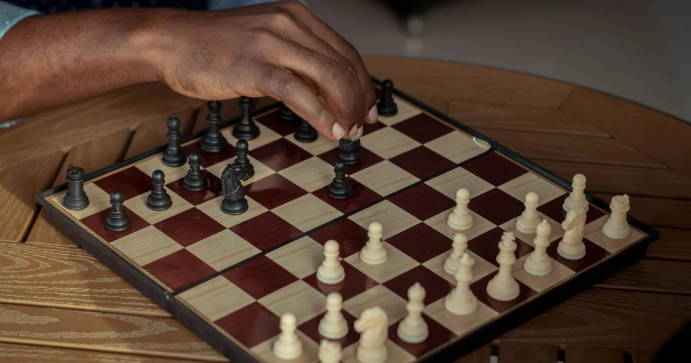

Au sommaire
Le récap en 30 secondes : les fourchettes 2026
Pour ceux qui sont pressés, voici l'état du marché français en 2026 :
- Cours particulier à domicile : 25 à 80 €/h selon le professeur et la ville (comptez plutôt 40-60 €/h dans les grandes villes comme Paris)
- Cours particulier en visio : 20 à 60 €/h — souvent 10-20 % moins cher que le présentiel
- Club d'échecs (licence FFE + cours collectifs) : environ 100 à 250 €/an selon le club et la ville
- Plateformes en ligne (Chess.com, Lichess...) : de gratuit à ~100 €/an pour les abonnements premium
- Stages vacances pour enfants : généralement 100 à 250 € la semaine
Maintenant, décortiquons — parce qu'un prix sans contexte ne veut rien dire.
Le cours particulier : de 25 à 80 €/h — pourquoi un tel écart ?
C'est la formule la plus efficace pour progresser (j'y reviendrai honnêtement plus bas), et celle où les prix varient le plus. Quatre facteurs expliquent l'écart :
1. Le niveau et l'expérience du professeur
Un étudiant classé 1600 Elo qui arrondit ses fins de mois ne facture pas comme un joueur confirmé qui enseigne depuis des années, ni comme un grand maître international. En gros :
- 25-35 €/h : joueur amateur ou étudiant, idéal pour une toute première approche ludique
- 40-60 €/h : professeur expérimenté avec un bon niveau de jeu (2000+ Elo) et une vraie pédagogie — le meilleur rapport qualité/progression pour la plupart des élèves
- 60-80 €/h et plus : maîtres et grands maîtres titrés — pertinent surtout pour les joueurs de compétition déjà classés
2. La ville
Paris et les grandes métropoles sont 20 à 40 % plus chères que la moyenne, déplacements et coût de la vie obligent. En région, on trouve d'excellents professeurs autour de 30-40 €/h.
3. Le format : domicile ou visio
Le cours à domicile inclut le déplacement du professeur — logiquement plus cher. La visio, popularisée depuis le Covid, fonctionne remarquablement bien aux échecs (l'échiquier partagé à l'écran est même parfois plus lisible qu'un échiquier physique pour analyser). J'ai comparé les deux formats en détail dans cours en ligne ou présentiel : le verdict.
4. L'engagement
La plupart des professeurs (moi compris) proposent des tarifs dégressifs par forfait de 5 ou 10 cours. Méfiez-vous en revanche des gros forfaits exigés avant le moindre cours d'essai.
Le club d'échecs : l'option la plus économique
Pour environ 100 à 250 € par an, un club affilié à la Fédération Française des Échecs offre : la licence, des cours collectifs hebdomadaires, des tournois internes et une communauté de joueurs. Rapporté à l'heure, c'est imbattable — parfois moins de 5 €/h.
Les limites, en toute honnêteté :
- Cours collectifs : 8 à 15 élèves par groupe, de niveaux différents — le rythme s'adapte au groupe, pas à vous
- Progression plus lente : personne n'analyse VOS parties ni ne corrige VOS défauts spécifiques
- Horaires fixes : le mercredi 18h, que ça arrange votre agenda ou non
Le club est un excellent complément (jouer régulièrement contre des humains est irremplaçable !), et pour un enfant qui débute, c'est souvent la meilleure porte d'entrée — j'en parle dans comment choisir un professeur pour votre enfant. Mais pour progresser vite ou débloquer un palier, il montre ses limites.
Les plateformes et cours en ligne
Soyons complets : on peut aussi apprendre pour presque rien.
- Lichess : gratuit, sans pub, excellent — exercices tactiques illimités
- Chess.com : version gratuite correcte, premium entre 50 et 100 €/an pour les leçons et analyses illimitées
- Vidéos YouTube : des heures de contenu gratuit, de qualité très variable
Le piège ? L'abondance sans direction. C'est tout le débat que je détaille dans professeur ou autodidacte : les ressources gratuites sont formidables pour s'entraîner, beaucoup moins pour se corriger. On répète les mêmes erreurs pendant des mois sans le savoir — c'est la première cause de stagnation chez les joueurs autodidactes.
Le meilleur moyen de savoir ? Essayer gratuitement.
Mon premier cours est offert : on évalue votre niveau (ou celui de votre enfant), je vous donne un plan de progression concret, et vous décidez ensuite — sans aucune pression.
Réserver mon cours offertÀ quoi reconnaît-on un bon professeur ? (les 4 critères)
Le prix ne dit pas tout. Avant de choisir, vérifiez ces quatre points :
- 1. Un niveau de jeu vérifiable : un classement Elo FIDE ou FFE public (le mien : 2092 FIDE, vérifiable sur le site de la FIDE). Méfiez-vous des « experts » sans classement — aux échecs, le niveau se prouve. Pour comprendre ce que valent ces chiffres, voir le classement Elo expliqué.
- 2. Une vraie pédagogie : être fort et savoir enseigner sont deux métiers différents. Demandez comment se déroule un cours type — si la réponse est « on joue et je commente », passez votre chemin.
- 3. Un plan personnalisé : le professeur analyse-t-il VOS parties ? Adapte-t-il le programme à vos faiblesses ? C'est toute la valeur ajoutée du cours particulier.
- 4. Un cours d'essai : gratuit ou pas cher, il doit exister. Un professionnel confiant dans la qualité de ses cours n'a aucune raison de le refuser.
Quel budget prévoir selon votre objectif ?
Pour finir, quelques repères concrets — parce que « ça dépend » n'a jamais aidé personne :
- « Je veux juste apprendre à jouer » : un guide structuré + 3 à 5 cours particuliers pour poser les bases = 150 à 250 €. C'est le déclic le plus rentable qui existe.
- « Je veux atteindre un bon niveau amateur (1200-1500 Elo) » : 2 cours par mois + entraînement personnel régulier pendant un an = 80 à 100 €/mois. Le rythme que suivent la plupart de mes élèves adultes.
- « Mon enfant accroche, on structure » : club (150 €/an) + 1 cours particulier par semaine = ~180 €/mois. Le combo qui forme les jeunes compétiteurs.
- Budget mini : Lichess gratuit + mon guide gratuit de 90 pages + une partie lente par semaine = 0 €. Sérieusement. Vous progresserez moins vite, mais vous progresserez.
Combien de temps pour atteindre chaque palier ? J'ai donné des chiffres réalistes (et un peu vexants pour les impatients 😄) dans combien de temps pour devenir bon aux échecs.
Vous savez maintenant ce que vous payez. Reste à essayer.
Cours à domicile à Paris et Versailles (50 €/h) ou en visio (40 €/h), enfants et adultes, tous niveaux. Le premier cours est offert, sans engagement.
Réserver mon cours offertArticle recommandé
Toujours en train d'hésiter entre prendre un prof et apprendre seul ? Ce comparatif est fait pour vous :
Apprendre les Échecs : Professeur ou Autodidacte ? Avantages, coûts réels et profils types pour choisir votre méthode →
Article rédigé par Nicolas Musicki, professeur d'échecs à Paris et Versailles
Retour à l'accueil |
Me contacter